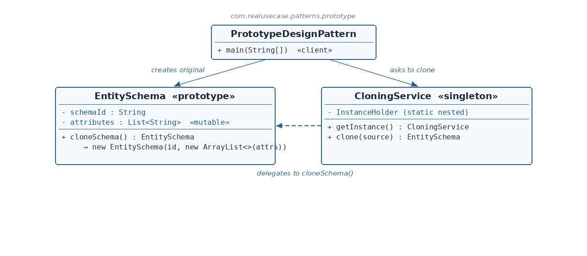

EntitySchema.java — the prototype
☕ 4 min read · 🎬 Video walkthrough · 📊 UML diagram · 💻 Runnable code
⚡ In a nutshell — Create new objects by copying an existing instance — the prototype — instead of constructing from scratch.
Create new objects by copying an existing instance — the prototype — instead of constructing from scratch. The copy is a genuinely independent object: mutating it never affects the original.
Prototype matters when an object is expensive to assemble (loaded from a database, computed, or configured through many steps) and you need many near-identical variants of it.
Schema-driven platforms hold entity schemas — the definition of an entity's attributes — that are expensive to load and validate. A common operation is "make me a variant of this schema": same base attributes, plus one or two extra fields for a tenant-specific extension. Re-loading and re-validating from the source every time would be wasteful; mutating the shared original would corrupt every other consumer. The production answer is exactly this module: clone the loaded schema (deep-copying its mutable attribute list), then customize the copy freely.
EntitySchema is the prototype: it knows how to copy itself via cloneSchema(). Crucially, the mutable attributes list is copied into a new ArrayList — a deep copy of the mutable state — while the immutable schemaId string is safely shared.CloningService is a small singleton façade over cloning: callers ask it for a copy, and it delegates to the prototype's own cloneSchema(). The object being copied stays in charge of how it is copied.
Reading the diagram: the client creates the original EntitySchema, then asks CloningService for a copy. The service delegates to the prototype's own cloneSchema() — the dashed arrow — because only the object itself reliably knows how deep its copy must be.
EntitySchema — The prototype — holds schemaId + a mutable attributes list, and copies itself via cloneSchema().CloningService — Singleton entry point for cloning — delegates to the prototype's own copy method.PrototypeDesignPattern — The client — clones, mutates the clone, and proves independence.public class EntitySchema {
private String schemaId;
private List<String> attributes;
public EntitySchema(String schemaId, List<String> attributes) {
this.schemaId = schemaId;
this.attributes = attributes;
}
public EntitySchema cloneSchema() {
return new EntitySchema(schemaId, new ArrayList<>(attributes));
}
...
}
cloneSchema() is the heart of the pattern. It builds a brand-new EntitySchema, passing schemaId as-is (a String is immutable, sharing the reference is safe) and — critically — new ArrayList<>(attributes): a fresh list containing the same elements. After this line, original and clone hold two different list objects. That one new ArrayList<> is the difference between a correct deep copy and a subtle shared-state bug.CloningService.java — the cloning entry pointpublic class CloningService {
private CloningService() {}
private static final class InstanceHolder {
private static final CloningService INSTANCE = new CloningService();
}
public static CloningService getInstance() {
return InstanceHolder.INSTANCE;
}
public EntitySchema clone(EntitySchema source) {
return source.cloneSchema();
}
}
clone(source) contains the pattern's key delegation: it does not reach into the schema's fields and copy them itself. It calls source.cloneSchema() — the object being copied stays the single authority on how deep its own copy must go. If EntitySchema later gains another mutable field, only cloneSchema() changes; every caller keeps working.PrototypeDesignPattern.java — the clientEntitySchema original = new EntitySchema("schema-1",
new ArrayList<>(Arrays.asList("name", "email")));
EntitySchema copy = CloningService.getInstance().clone(original);
copy.getAttributes().add("phone");
System.out.println("original attrs: " + original.getAttributes());
System.out.println("copy attrs: " + copy.getAttributes());
System.out.println("different instances: " + (original != copy));
"phone".[name, email], the copy shows [name, email, phone], and original != copy confirms two distinct objects. If cloneSchema() had shared the list, the first line would (wrongly) show the phone attribute too — this demo is designed to catch exactly that bug.new ArrayList<>(attributes) inside cloneSchema()? That is the deep-copy step for the mutable state. Immutable String can be shared; a mutable List must not be.cloneSchema() keeps the knowledge in one place.CloningService at all? It gives the application one uniform entry point for cloning (a natural seam for later adding validation, metrics, or copy-on-write policies) without touching the prototype class.$ java -cp target/classes com.realusecase.patterns.PrototypeDesignPattern
original attrs: [name, email]
copy attrs: [name, email, phone]
different instances: true
Object.clone() / copy constructors / List.copyOf idioms across the JDK.Copy the one you already have — then change the copy, never the original.
👏 Found this useful? Give it a few claps so more developers discover it, and follow for the whole series — every article ships with a UML diagram, runnable code, a narrated video, and a companion PDF. Happy building! 🚀